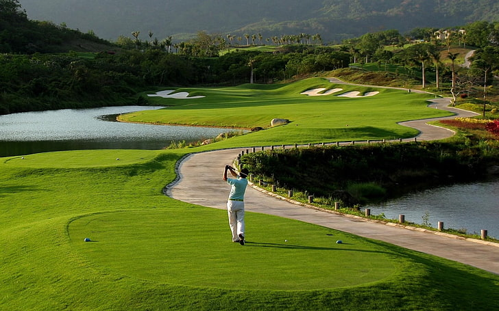

History of Golf
Golf originated in Scotland during the 15th century. It was banned by Scottish kings for interfering with archery practice before being embraced and spread across Europe. The first recorded rules of golf were written in 1744 in Edinburgh.
Today, golf is played recreationally and professionally around the world, from local courses to elite international tournaments.
Rules & Equipment
- Played on a course with 9 or 18 holes
- Goal is to hit a ball into each hole with the fewest strokes
- Clubs include drivers, irons, wedges, and putters
- Common formats: stroke play, match play
- Rules governed by the R&A and USGA
Major Golf Tournaments
- The Masters (USA)
- The Open Championship (UK)
- U.S. Open
- PGA Championship
- Ryder Cup (Team Event)
Famous Golfers
- Tiger Woods (USA)
- Jack Nicklaus (USA)
- Rory McIlroy (Northern Ireland)
- Annika Sörenstam (Sweden)
- Hideki Matsuyama (Japan)
Health Benefits of Golf
- Promotes walking and physical activity
- Enhances focus and strategic thinking
- Improves muscle tone and balance
- Reduces stress through nature and social play
- Great for all ages and fitness levels
Global Popularity
Golf is enjoyed in over 200 countries and has millions of participants. It’s both a recreational hobby and a competitive professional sport, with a strong following in the USA, UK, Japan, and Australia.